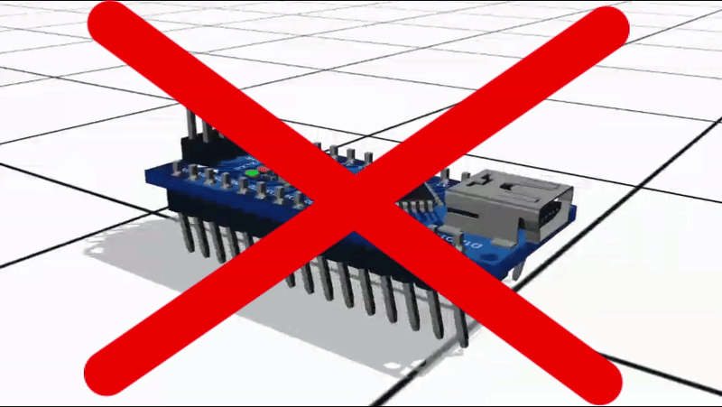

2025 ЭТО ОЧЕРЕДНОЙ ГОД СТМ32 ПОБЕДЫ
Почему 2025 это очередной год стм32 победы?
1. В 2025 будет выпущена первая стм32 с wifi
2. STM32 ARM ARCHITECTURE IS BAZINGLY FAST THAN ARDUINO BULLSHIT
3. Очередная стм32 победа
